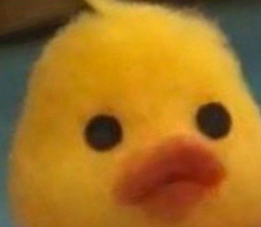
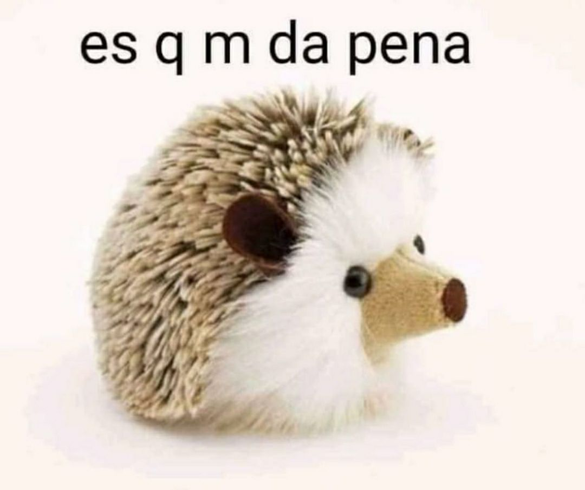
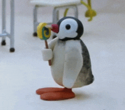
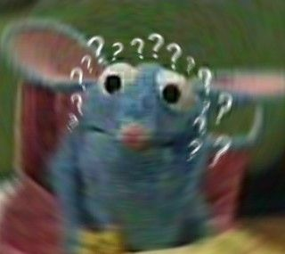
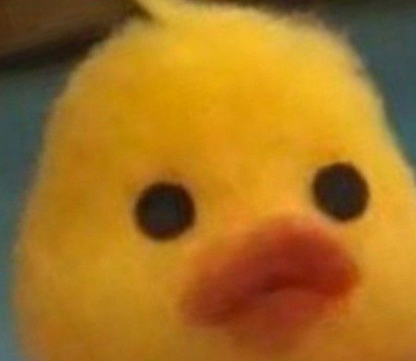
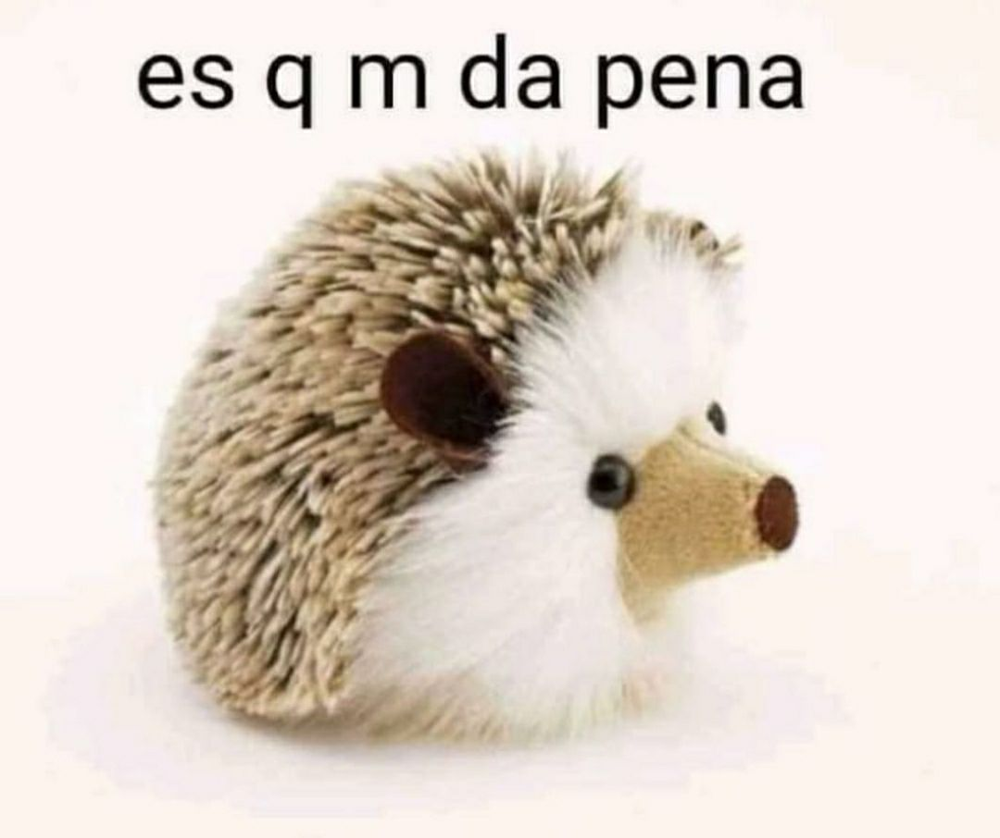
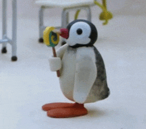
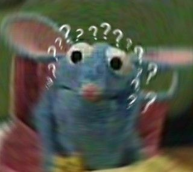

Hola mundo!! Me llamo Daniela. Soy de la Ciudad de México y es donde actualmente vivo. Nací en el 2000, año donde dijeron que las computadoras se iban a volver locas e iban a matar a todos los humanos(? jaja raritos
Me gusta mucho escuchar música, me hace sentir mucho mejor; antes me gustaba cocinar pero descubrí que me salía todo mal y mejor dejé de hacerlo antes de intoxicarme,quemar la cocina o algo así.
Me gustaría irme de este país en un futuro no tan lejano y vivir una vida interesante pero tranquila.
La siguiente es una galeria que contiene imagenes recopiladas de internet, creadas por artistas anónimos con el propósito de insprar a las masas, siendo yo parte de estas he logrado encontrar en cierto grado de acertividad que me describen y a mi vida como lo haría la palabra infinito al universo.
 






